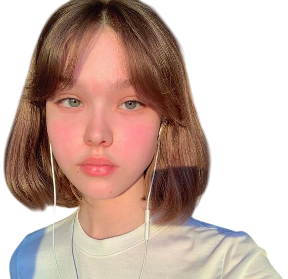
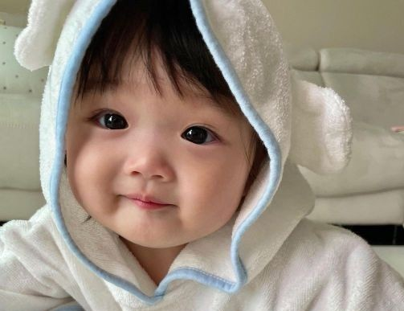

Neoteny
The display of youth and beauty are intertwined. Facial characteristics can convey an individual's age, fertility and mate quality, leaving a strong impact on perceived attractiveness. When attractive individuals retain baby-like features in adulthood which symbolises youthfulness, their face can be described as neotenous.

So, what is it that makes him look so youthful despite his age?
Is his smooth skin the only factor? What should an individual looking to stay youthful pay attention to in order to avoid any signs of ageing?
Neotenous Features

Juvenile features such as a high, rounded forehead, relatively large eyes, a small and short nose, full cheeks and smooth skin gives an appearance that is baby-like.

Neotenous features tend to be attractive in adults because they signal youth.
Youthfulness is often equated with health, vitality and fertility, making neotenous features particularly attractive in potential mates .
Such features are often described as "cute" or "adorable," evoking positive emotional responses.
The "baby schema" effect, where infantile features trigger caregiving behaviors, also extends to adults with neotenous traits, making them more appealing.
Moreover, neotenous features are associated with approachability, making individuals appear more trustworthy and friendly.
Youth & Health
Features that display youth are not simply controlled by your genes.

While genetics determine factors such as having larger eyes or a smaller nose, the loss of youthful features can be accelerated by one's lifestyle, even at a young age.
For instance, sleep deprivation can result in droopy eye lids and downturned mouth corners.
Unprotected UV exposure can creating wrinkles, age spots, and oxidative damage to the skin, accelerating skin ageing.
It is well within one's control to maintain a youthful, attractive appearance, even as one ages.
Look at the image below. Can you guess the man's age?
This image of male model Chuando Tan was taken in his 50s.
Retaining Youthfulness
Your lifestyle can impact your perceived age. But cues that signal youth are present throughout the face and it is insufficient to simply focus on a few features.

The presence of wrinkles, puffiness, etc. in the under-eye region highly impact in the perception of age. The eyebrow position and shape changes when your body ages at a quicker pace. Loss of collagen and elastin in the skin leads to nasolabial folds. The list of features that detract from a youthful appearance goes on. Learn more about each facial feature under Attractive Features Section.

Hence, appearing young comes from an improvement of overall health and holistic lifestyle changes. Self care should be multifaceted, ranging from diet to nutrition to skincare.
Learn More under the How to Glow Up section